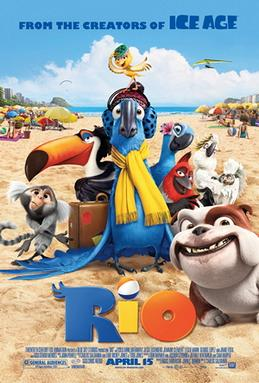
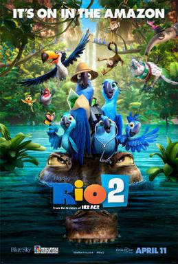

2011
Rio
Directed by Carlos Saldanha and produced by Blue Sky Studios and 20th Century Fox Animation, the Rio film series comprises two animated adventures set in the vibrant landscapes of Rio de Janeiro and the Amazon rainforest.
Rio (2011): In the vibrant city of Rio de Janeiro, Blu, a rare blue macaw who can't fly, lives a comfortable life with his human owner Linda. Their peaceful existence is disrupted when they learn that Blu is the last male of his species and needs to mate with Jewel, a feisty female macaw, to save their kind. The journey takes them on an adventure filled with colorful characters, including Nico, Pedro, and Rafael, as they navigate through the bustling streets and lush landscapes of Rio. Along the way, Blu and Jewel must overcome their differences and learn to embrace their true selves while evading the clutches of bird smugglers. Through teamwork, courage, and love, Blu and Jewel discover the beauty of freedom and the importance of family, ultimately finding their wings and soaring through the skies together.
Rio 2 (2014): In the sequel to Rio, Blu, Jewel, and their three children leave the comfort of Rio de Janeiro to embark on a wild Amazon adventure. As they journey deep into the rainforest, they encounter old friends and new adversaries, including Jewel's long-lost family of wild macaws. Blu struggles to fit in with his new surroundings, while Jewel reconnects with her roots and faces the charismatic Roberto, her childhood friend. Meanwhile, the villainous Nigel plots his revenge on Blu and his family, teaming up with Gabi, a poisonous frog, and Charlie, a silent anteater. Amidst the lush landscapes and samba beats, Blu must prove himself as a true hero to protect his family and their home. With themes of environmental conservation and embracing diversity, Rio 2 is a colorful and musical journey celebrating the wonders of the Amazon and the bonds of family.
Rio: movie cover
Rio 2: movie cover
I really like the movie and I have watched several times.
Rio
Rio 2